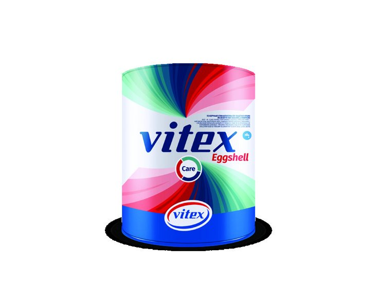

Латексная · полуматовая (eggshell)
Vitex Care Eggshell
Эмульсионная краска для стен и потолков с лучшими в своём классе характеристиками. Технология защиты поверхности делает плёнку устойчивой к впитыванию обычных бытовых пятен.
- Расход 13–15 м²/л
- Сушка 30–60 мин
- Разбавление 0–10%
- Фасовка 0,75–10 л